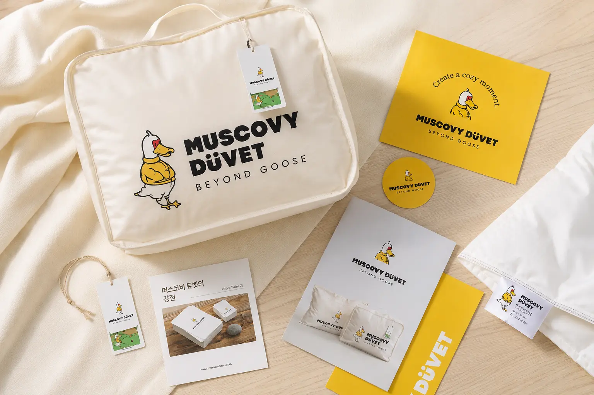
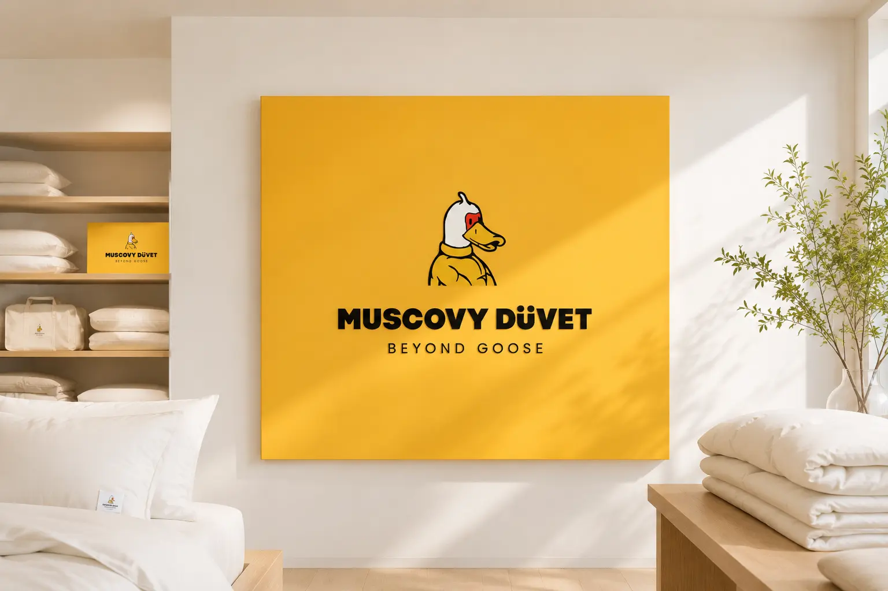
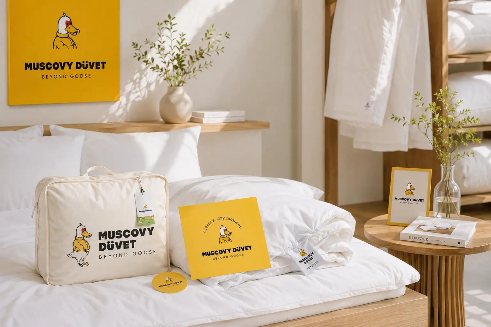
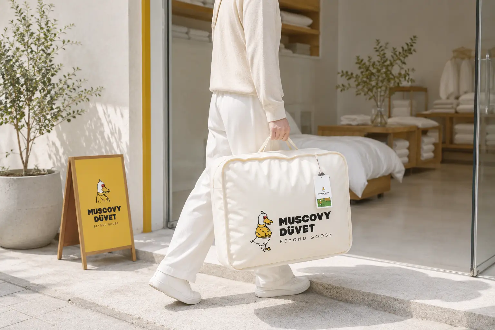
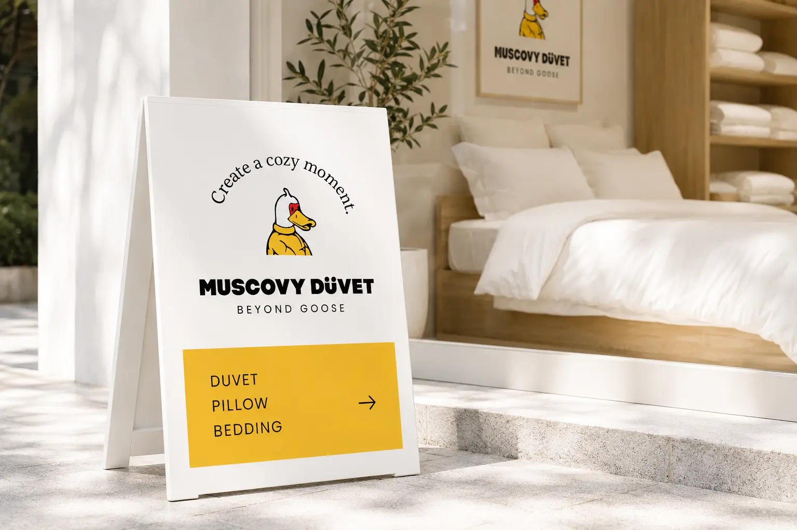
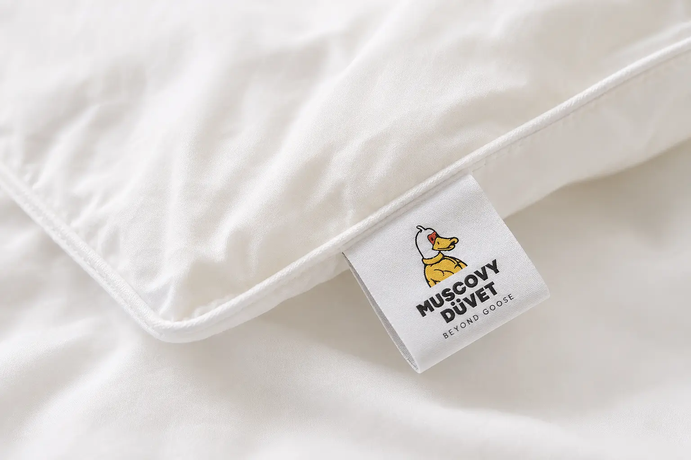
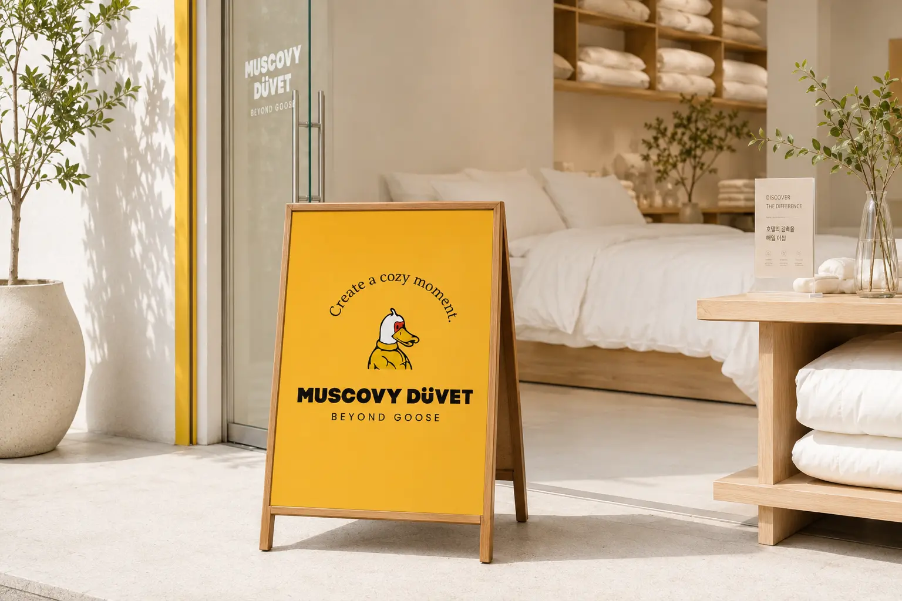
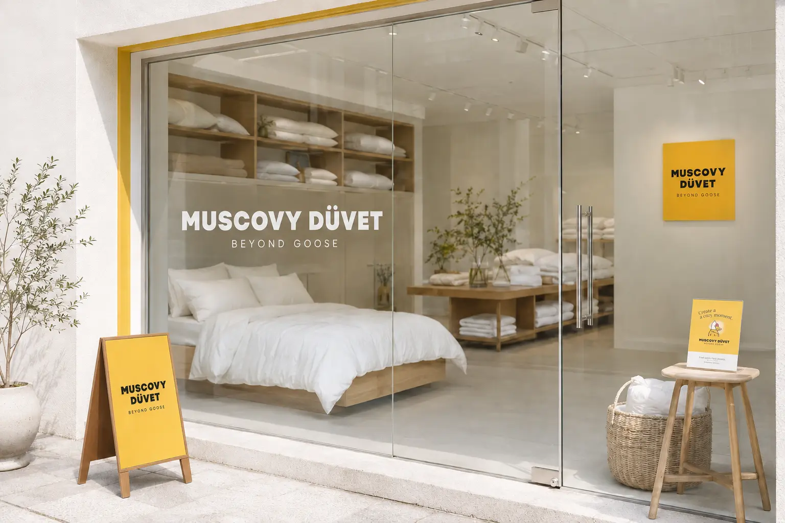
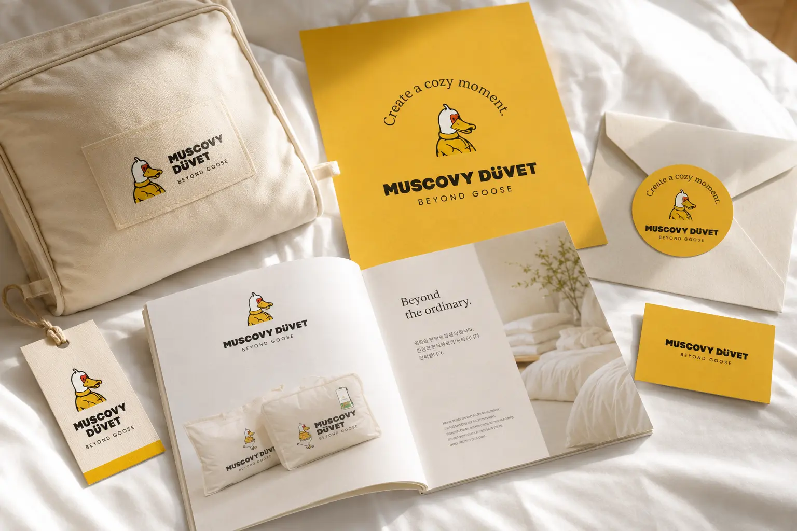
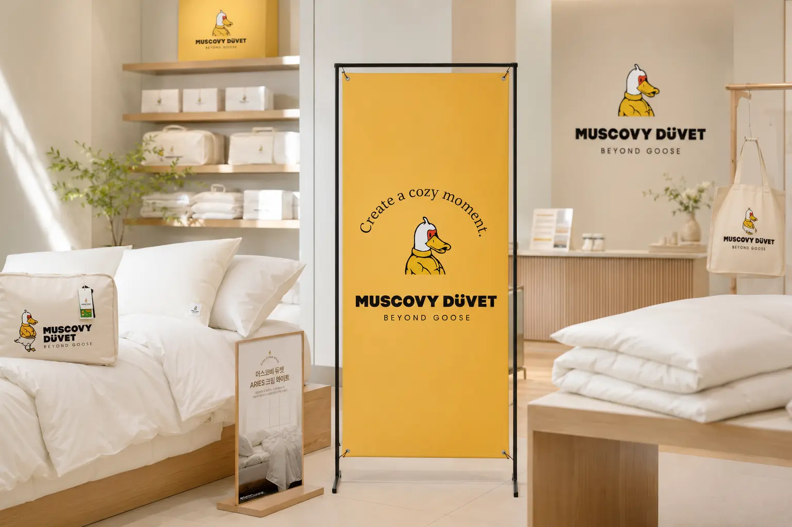

침구를 단순한 생활 필수품이 아니라 따뜻함과 편안함, 밝은 브랜드 경험이 담긴 제품으로 인식시키는 것이 목표입니다. 로고와 캐릭터, 패키지, 웹사이트 등 모든 접점에 일관된 시각 언어를 적용해 개성 있는 프리미엄 듀벳 브랜드로 구축했습니다.
Portfolio / Brand Identity
MUSCOVY
DÜVET
MUSCOVY DÜVET은 거위털 중심의 기존 침구 인식에서 벗어나 머스코비 덕다운의 개성과 품질을 제안하는 프리미엄 침구 브랜드입니다. 밝은 옐로우와 캐릭터 그래픽을 통해 기능적 신뢰감과 경쾌한 브랜드 경험을 함께 전달합니다.
- Scope
- Brand Identity / Lifestyle
- Studio
- BDLab
- Year
- 2026

“BEYOND GOOSE”를 핵심 메시지로 삼아 기존 구스다운 중심의 시장을 넘어서는 새로운 선택지를 제안합니다. 캐릭터를 활용해 소비자와의 심리적 거리를 낮추고, 편안한 수면과 즐거운 브랜드 경험을 함께 전달합니다.
강한 옐로우 컬러와 블랙 타이포그래피, 머스코비 캐릭터를 중심으로 Cute, Friendly, Bright, Clear의 이미지를 구성했습니다. 침구의 부드러운 감성에 에너지 있는 그래픽을 결합해 친근하면서도 명확하게 기억되는 브랜드 인상을 완성했습니다.








